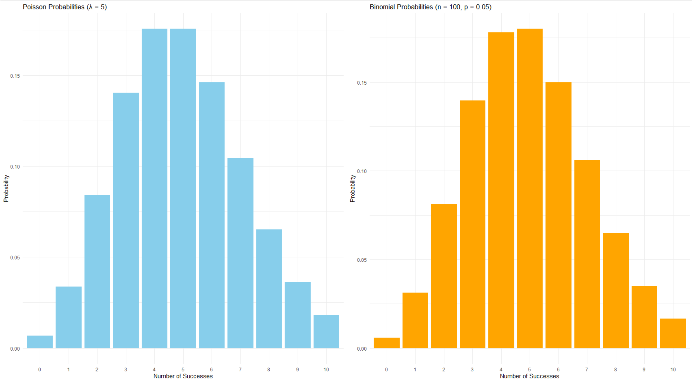
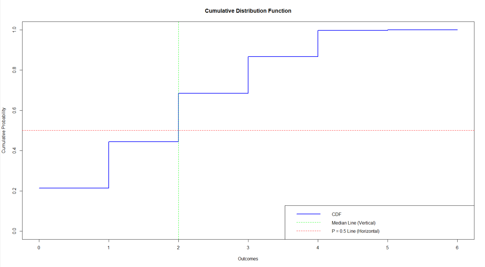
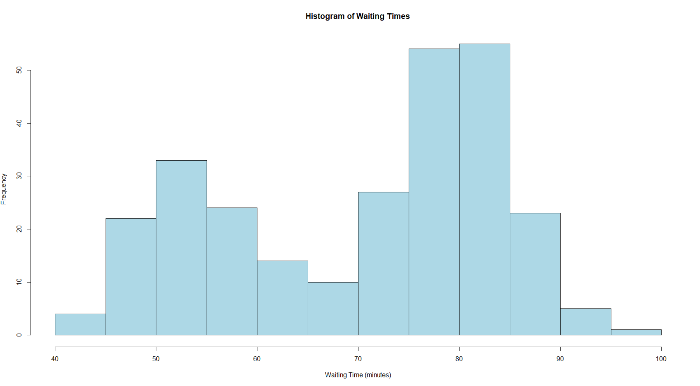
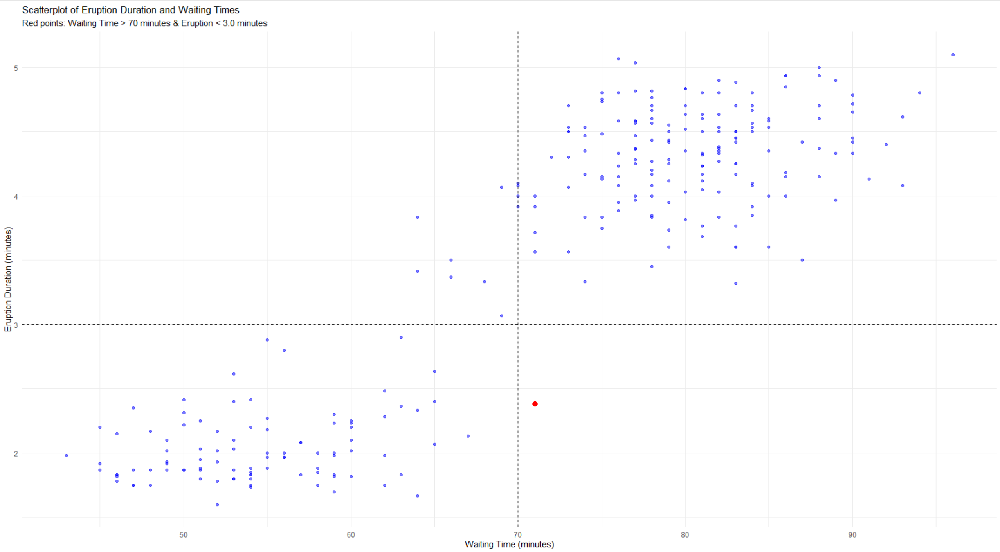
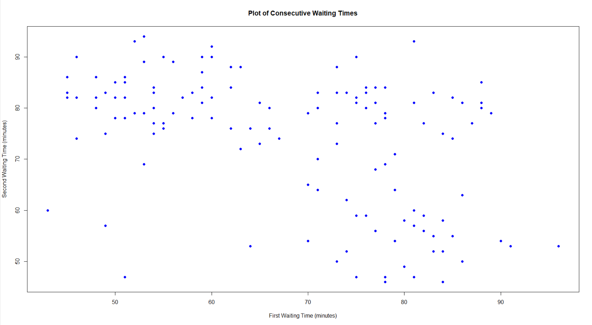
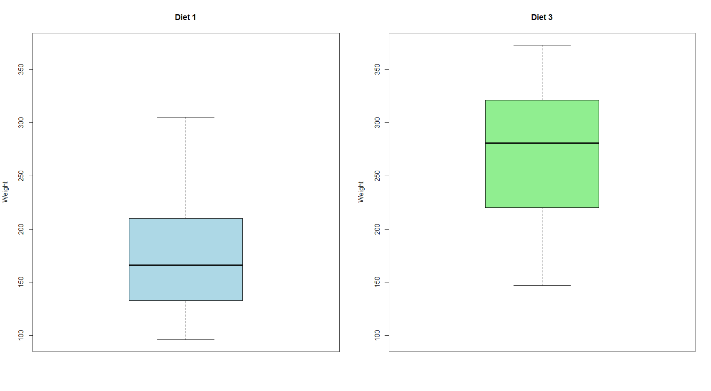
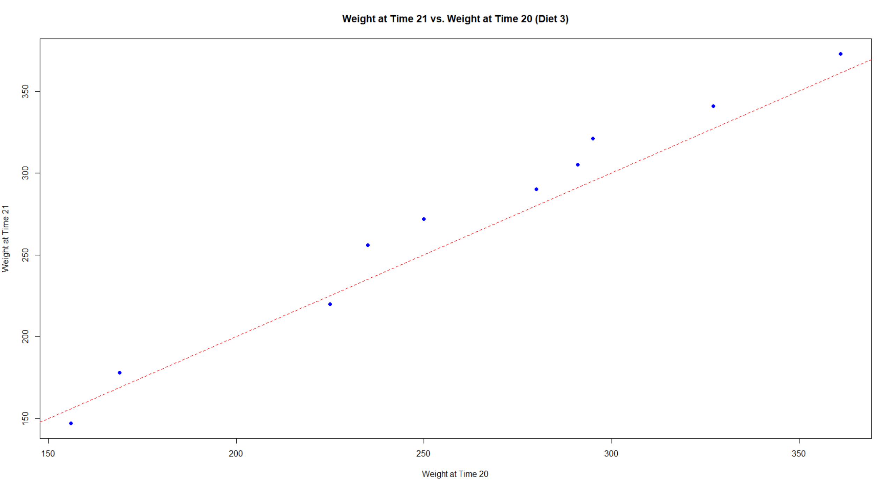
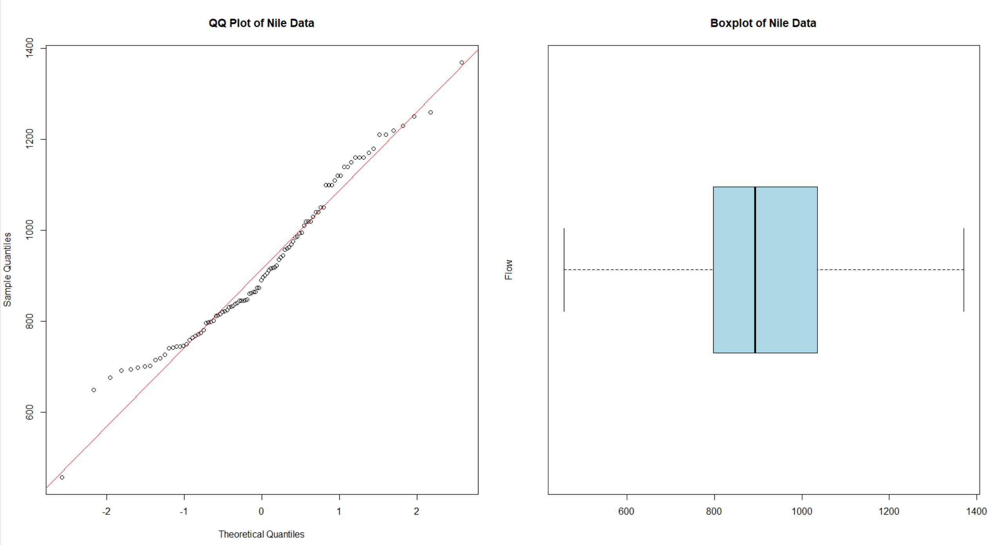
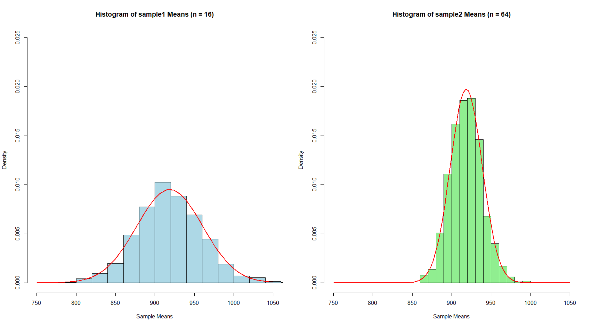
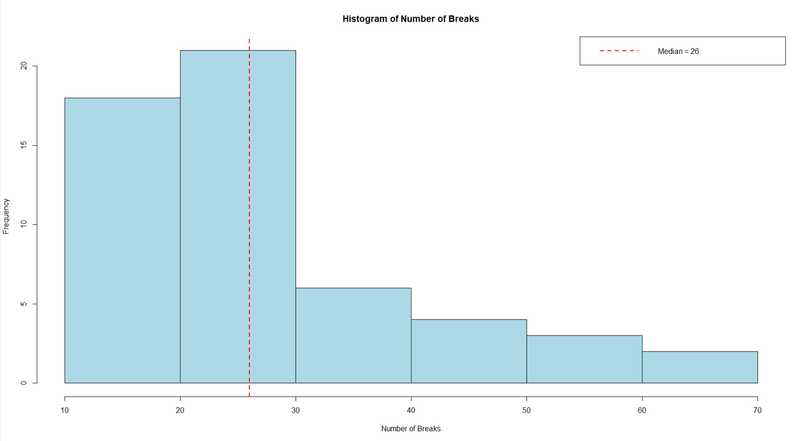

Hypothesis Testing and Sampling Distribution Analysis with R
Download original formatR has probability functions available for use Using one distribution to approximate another is not uncommon.
(1)(a) The Poisson distribution may be used to approximate the binomial distribution if n > 20 and np < 7. Estimate the following binomial probabilities using *dpois()* or *ppois()* with probability p = 0.05, and n = 100. Then, estimate the same probabilities using *dbinom()* or *pbinom()*. Show the numerical results of your calculations.
X Binomial Poisson
1 0 0.005920529 0.006737947
2 1 0.031160680 0.033689735
3 5 0.180017827 0.175467370
4 ≤5 0.615999128 0.615960655
5 ≥6 0.384000872 0.384039345
(i) The probability of exactly 0 successes.
"Poisson approximation P(X = 0): 0.00673794699908547"
"Exact binomial P(X = 0): 0.00592052922033403"
The probability of fewer than 6 successes. Please note the following, taken from the Binomial Distribution R Documentation page, regarding the “lower.tail” argument:
lower.tail logical; if TRUE (default), probabilities are P[X ??? x], otherwise, P[X > x].
```{r test1aii}
The binomial may also be approximated via the normal distribution. Estimate the following binomial probabilities using *dnorm()* or *pnorm()*, this time with probability p = 0.25 and n = 100. Then, calculate the same probabilities using *dbinom()* and *pbinom()*. Use continuity correction. Show the numerical results of your calculations.
"Poisson approximation P(X < 6): 0.615960654833063"
"Exact binomial P(X < 6): 0.615999127956141"
(iii) The probability of exactly 25 successes.
"Normal approximation P(X = 25): 0.0919274447440248"
"Exact binomial P(X = 25): 0.0917996917668368"
The probability of fewer than 20 successes. Please note the following, taken from the Normal Distribution R Documentation page, regarding the “lower.tail” argument:
lower.tail logical; if TRUE (default), probabilities are P[X ??? x], otherwise, P[X > x].
```{r test1aiv}
"Normal approximation P(X = 25): 0.0919274447440248"
"Exact binomial P(X = 25): 0.0917996917668368"
1(b) Generate side-by-side barplots using *par(mfrow = c(1,2))* or *grid.arrange()*. The left barplot will show Poisson probabilties for outcomes ranging from 0 to 10. The right barplot will show binomial probabilities for outcomes ranging from 0 to 10. Use p = 0.05 and n = 100. Title each plot, present in color and assign names to the bar; i.e. x-axis value labels.

1.(c) For this problem, refer to Sections 5.2 of Business Statistics. A discrete random variable has outcomes: 0, 1, 2, 3, 4, 5, 6. The corresponding probabilities in sequence with the outcomes are: 0.214, 0.230, 0.240, 0.182, 0.130, 0.003, 0.001. In other words, the probabilty of obtaining “0” is 0.215.
Calculate the expected value and variance for this distribution using the general formula for mean and variance of a discrete distribution. To do this, you will need to use integer values from 0 to 6 as outcomes along with the corresponding probabilities. Round your answer to 2 decimal places.
Expected Value (rounded to 2 decimal places): 1.8
Variance (rounded to 2 decimal places): 1.79
Use the *cumsum()* function and plot the cumulative probabilties versus the corresponding outcomes. Detemine the value of the median for this distribution and show on this plot. Note that there are methods for interpolating a median. However, we can identify an appropriate median from our set of our outcomes - 0 through 6 - that satisfies the definition. Creating a stair-step plot of the cumulative probability as a function of the outcomes may be helpful in identifying it.

The median of the distribution is: 2
2. Conditional probabilities appear in many contexts and, in particular, are used by Bayes’ Theorem. Correlations are another means for evaluating dependency between variables. The dataset “faithful”” is part of the “datasets” package and may be loaded with the statement data(faithful). It contains 272 observations of 2 variables; waiting time between eruptions (in minutes) and the duration of the eruption (in minutes) for the Old Faithful geyser in Yellowstone National Park.
2)(a) ) Load the “faithful” dataset and present summary statistics and a histogram of waiting times. Additionally, compute the empirical conditional probability of an eruption less than 3.0 minutes, if the waiting time exceeds 70 minutes.

"Empirical conditional probability: 0.00606060606060606"
(i) Identify any observations in "faithful" for which the waiting time exceeds 70 minutes and the eruptions are less than 3.0 minutes. List and show any such observations in a distinct color on a scatterplot of all eruption (vertical axis) and waiting times (horizontal axis). Include a horizontal line at eruption = 3.0, and a vertical line at waiting time = 70. Add a title and appropriate text.

What does the plot suggest about the relationship between eruption time and waiting time?
As the waiting time increases, the eruption duration increases. This indicates that longer waiting times are often followed by longer eruptions and shorter waiting times are also associated with shorter eruptions. This trend aligns with the idea that the geyser may need a longer buildup to produce a more substantial eruption.
The red point (where waiting time > 70 minutes and eruption < 3.0 minutes) is an outlier..
(b) Past research indicates that the waiting times between consecutive eruptions are not independent. This problem will check to see if there is evidence of this. Form consecutive pairs of waiting times. In other words, pair the first and second waiting times, pair the third and fourth waiting times, and so forth. There are 136 resulting consecutive pairs of waiting times. Form a data frame with the first column containing the first waiting time in a pair and the second column with the second waiting time in a pair. Plot the pairs with the second member of a pair on the vertical axis and the first member on the horizontal axis.
One way to do this is to pass the vector of waiting times - faithful$waiting - to matrix(), specifying 2 columns for our matrix, with values organized by row; i.e. byrow = TRUE.

(c) Test the hypothesis of independence with a two-sided test at the 5% level using the Kendall correlation coefficient. The *cor.test()* function can be used to structure this test and specify the appropriate - Kendall's tau – method
Kendall's rank correlation tau
data: waiting_pairs_df$First_Waiting_Time and waiting_pairs_df$Second_Waiting_Time
z = -4.9482, p-value = 7.489e-07
alternative hypothesis: true tau is not equal to 0
sample estimates:
tau
-0.2935579
3)Performing hypothesis tests using random samples is fundamental to statistical inference. The first part of this problem involves comparing two different diets. Using “ChickWeight” data available in the base R, “datasets” package, we will create a subset of the “ChickWeight” data frame. Specifically, we want to create a data frame that includes only those rows where Time == 21 AND Diet == 1 or 3.
Display two side-by-side vertical boxplots using par(mfrow = c(1,2)). One boxplot would display Diet "1" and the other Diet "3".

(3)(bUse the “weight” data for the two diets to test the null hypothesis of equal population mean weights for the two diets. Test at the 95% confidence level with a two-sided t-test. This can be done using t.test() in R. Assume equal variances. Display the results of t.test().
##### Working with paired data is another common statistical activity. The "ChickWeight" data will be used to illustrate how the weight gain from day 20 to 21 may be analyzed. This time, we will look only at those individuals on Diet == "3". You will need to add code below creating two (2) vectors. One (1) vector should include all the Time == 20 weights of those individuals on Diet == "3"; a second should include all the Time == 21 weights of those individuals on Diet == "3".
```{r test3paired}
# There are multiple ways to approach the subsetting task. The method you choose is up # to you.
# The first six (6) elements of your Time == 20 vector should match those below: # [1] 235 291 156 327 361 225
Two Sample t-test
data: weight_diet1 and weight_diet3
t = -3.5955, df = 24, p-value = 0.001454
alternative hypothesis: true difference in means is not equal to 0
95 percent confidence interval:
-145.67581 -39.42419
sample estimates:
mean of x mean of y
177.75 270.30
(3)(c) Present a scatterplot of the Time == 21 weights as a function of the Time == 20 weights. Include a diagonal line with zero intercept and slope equal to one. Title and label the variables in this scatterplot.

d) Calculate and present a one-sided, 95% confidence interval for the average weight gain from day 20 to day 21. Write the code for the paired t-test and for determination of the confidence interval endpoints. **Do not use *t.test()**, although you may check your answers using this function. Present the resulting test statistic value, critical value, p-value and confidence interval
Paired t-test Results:
Mean Difference (Weight Gain): 11.4
Standard Deviation of Differences: 11.17736
Sample Size: 10
Degrees of Freedom: 9
Standard Error of the Mean Difference: 3.534591
Test Statistic (t): 3.225267
Critical Value (t critical): 1.833113
p-value (One-Sided): 0.00520061
One-Sided 95% Confidence Interval for the Mean Difference:
Lower Bound: 4.920696
Upper Bound: Infinity
4) Statistical inference depends on using a sampling distribution for a statistic in order to make confidence statements about unknown population parameters. The Central Limit Theorem is used to justify use of the normal distribution as a sampling distribution for statistical inference. Using Nile River flow data from 1871 to 1970, this problem demonstrates sampling distribution convergence to normality. Use the code below to prepare the data. Refer to this example when completing
Using Nile River flow data and the "moments" package, calculate skewness and kurtosis. Present a QQ plot and boxplot of the flow data side-by-side using *qqnorm()*, *qqline()* and *boxplot()*; *par(mfrow = c(1, 2))* may be used to locate the plots side-by-side. Add features to these displays as you choose.

Skewness of Nile data: 0.3223697
Kurtosis of Nile data: 2.695093
b) Using set.seed(124) and the Nile data, generate 1000 random samples of size n = 16, with replacement. For each sample drawn, calculate and store the sample mean. This can be done with a for-loop and use of the sample() function. Label the resulting 1000 mean values as “sample1”. Repeat these steps using set.seed(127) - a different “seed” - and samples of size n = 64. Label these 1000 mean values as “sample2”. Compute and present the means, sample standard deviations and sample variances for “sample1” and “sample2” in a table with the first row for “sample1”, the second row for “sample2” and the columns labled for each statistic
Sample Mean Standard_Deviation Variance
1 sample1 918.7364 42.00156 1764.1312
2 sample2 918.5149 20.22883 409.2054
c) Present side-by-side histograms of "sample1" and "sample2" with the normal density curve superimposed. To prepare comparable histograms, it will be necessary to use "freq = FALSE" and to maintain the same x-axis with "xlim = c(750, 1050)", and the same y-axis with "ylim = c(0, 0.025)." **To superimpose separate density functions, you will need to use the mean and standard deviation for each "sample"
Create histograms of "sample1" and "sample2" with normal density curves superimposed

5) This problem deals with contingency table analysis. This is an example of categorical data analysis (see Kabacoff,). The “warpbreaks” dataset gives the number of warp breaks per loom, where a loom corresponds to a fixed length of yarn. There are 54 observations on 3 variables: breaks (numeric, the number of breaks), wool (factor, type of wool: A or B), and tension (factor, low L, medium M and high H). These data have been studied and used for example elsewhere. For the purposes of this problem, we will focus on the relationship between breaks and tension using contingency table analysis.
5)a) warpbreaks is part of the “datasets” package and may be loaded via data(warpbreaks). Load “warpbreaks” and present the structure using str(). Calculate the median number of breaks for the entire dataset, disregarding “tension” and “wool”. Define this median value as “median_breaks”. Present a histogram of the number of breaks with the location of the median indicated.
Create a new variable “number” as follows: for each value of “breaks”, classify the number of breaks as either strictly below “median_breaks”, or the alternative. Convert the “above”|“below” classifications to a factor, and combine with the dataset warpbreaks. Present a summary of the augmented dataset using summary(). Present a contingency table of the frequency of breaks using the two variables “tension” and “number”. There should be six cells in this table.

Warpbreaks Dataset Summary:
Structure:
54 observations, 3 variables:
breaks : Numeric (e.g., 26, 30, 54, ...)
wool : Factor with 2 levels ("A", "B")
tension: Factor with 3 levels ("L", "M", "H")
Median Number of Breaks: 26
Histogram of Breaks:
Displays the distribution of the number of breaks with the median (26) marked by a red dashed line for reference.
Augmented Dataset Summary:
Breaks:
Min: 10
1st Quartile: 18.25
Median: 26
Mean: 28.15
3rd Quartile: 34
Max: 70
Wool:
Level "A": 27
Level "B": 27
Tension:
Level "L": 18
Level "M": 18
Level "H": 18
Break Classification (Number):
Above Median: 29
Below Median: 25
Contingency Table of Breaks by Tension and Classification:
| Above | Below | |
| L (Low) | 14 | 4 |
| M (Med) | 10 | 8 |
| H (High) | 5 | 13 |
(b) ) Using the table constructed in (5)(a), test at the 5% level the null hypothesis of independence using the uncorrected *chisq.test()* (Black, Business Statistics, Section 16.2). Show the results of this test and state your conclusions.
Contingency Table:
| Above | Below | |
| L (Low) | 14 | 4 |
| M (Med) | 10 | 8 |
| H (High) | 5 | 13 |
Chi-Squared Test of Independence Results:
Test Statistic (X-squared): 9.0869
Degrees of Freedom (df): 2
p-value: 0.01064
There is evidence at the 5% level to conclude that there is an association between the number of warp breaks and the tension level. The number of breaks is not independent of the tension level.
c) ‘Manually’ calculate the chi-squared statistic and p-value of the table from (5)(a). The addmargins() function can be used to add row and column sums to the table; useful for calculating the expected values for each cell. You should be able to match the chi-squared and p-values from (5)(b). The underlying code for the chisq.test() function can be viewed by entering chisq.test - without parentheses - in the Console. You are given code below to create the table, add row and column sums and calculate the expected values for the for the first two (2) of three (3) rows. You will need to add code to calculate the expected values for the third row and the chi-squared. The pchisq() function can be used to return the p-value.
Contingency Table:
| Above | Below | Sum | |
| L (Low) | 14 | 4 | 18 |
| M (Med) | 10 | 8 | 18 |
| H (High) | 5 | 13 | 18 |
| Sum | 29 | 25 | 54 |
Expected Counts:
| Above | Below | |
| L (Low) | 9.6667 | 8.3333 |
| M (Med) | 9.6667 | 8.3333 |
| H (High) | 9.6667 | 8.3333 |
Manual Chi-Squared Test Results:
Chi-squared Statistic: 9.0869
Degrees of Freedom: 2
P-value: 0.01064
d) Build a user-defined function, using your code for (5)(c).We want to pass our (5)(a) table to our function and have it return the chi-squared statistic and p-value. You're provided with the 'shell' of a function and will need to add code to calculate the expected values, the chi-squared statistic, the p-value and return (i.e. output) the chi-squared and p-value.
```{r 5d}
chisq_function <- function(x) { # Code for calculating the expected values mar_tbl <- addmargins(x) e11 <- mar_tbl[4, 1] * mar_tbl[1, 3] / mar_tbl[4, 3] e12 <- mar_tbl[4, 2] * mar_tbl[1, 3] / mar_tbl[4, 3] e21 <- mar_tbl[4, 1] * mar_tbl[2, 3] / mar_tbl[4, 3] e22 <- mar_tbl[4, 2] * mar_tbl[2, 3] / mar_tbl[4, 3]
# Code for calculating the chi-squared
# Code for calculating the degrees of freedom and p-value
# Code to ouput the chi-squared, degrees of freedom and p-value
}
chisq_function(tbl)
You do not need to do anything with the below. It is provided only for demonstration purposes. In (5)(d), we know the size of the table - 3 x 2 - and write a function to match. Often, though, we’ll want to write functions that are flexible in some way.
```{r chisq_vectorized} # Below is a function that should return the same values as chisq.test() and your # function from (5)(d). Here, though, the function loops over the rows and columns # to calculate the expected values. Ideally, this function would work for any sized # table.
Chi-Squared Statistic: 9.086897
Degrees of Freedom: 2
P-Value: 0.01063667